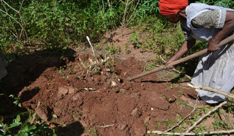

THE CHALLENGES
The low level of engineering technology inputs into agriculture is one main constraint hindering the modernization of agriculture and food production in many parts of the world.
Cassava (Manihot esculenta Crantz) is an important food security, industrial and energy crop in the world. Its roots provide dietary carbohydrates for over 800 million people. Global cassava production in 2012 was 282 million tonnes, with 56% by Africa, 30% by Asia, and 14% produced in South America. Cassava is a bio-fuel source that can replace fossil fuel.
Harvesting is a major constraint to commercialise cassava production in sub-Saharan Africa. Manual cassava harvesting is a painful, stressful and time consuming activity full of drudgery especially, during the dry season.
Until recently, there are no commercial mechanical cassava harvesters in use by cassava growers in Africa. This makes cassava production to be full of drudgery, unattractive to the youth and dependent on aging farmers, who produce limited outputs with little export potential.

Slow and painful manual cassava harvesting